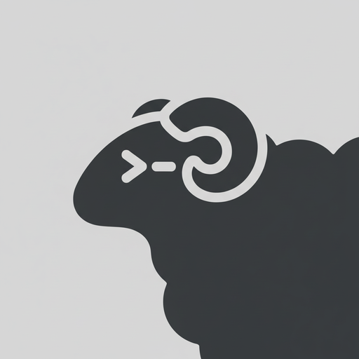
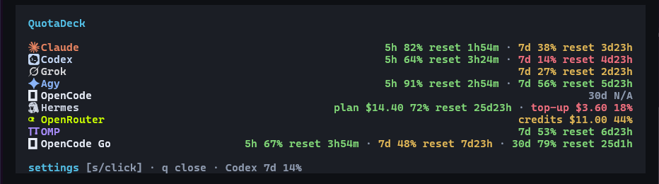
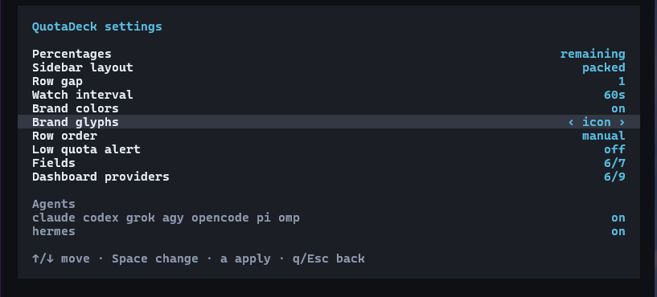

A HERDR PLUGINKnow what you have left.
Live quota, model, context and cache data.
One resizable pane, scoped to your tools’ credentials.
Keep the limits in sight.
See quota across your tools without leaving your session. Model, context and cache stay close; missing credentials and unknown resets stay explicit.
Your providers. One place.
Claude, Codex, Grok, Agy, OpenCode, Hermes, OpenRouter and OMP. Each integration reports the data its local credentials and provider make available.
OpenRouter credits live in the dashboard. Dollar-based balances remain dollar-based. Reset times appear only when supplied.
{kind=link}
{kind=link}
{kind=link}

Controls within reach.
Choose remaining or used quota. Change provider order, colors and fields. Keep the sidebar packed or stacked, and sort manually or by least quota left.
Open Settings with prefix+shift+q, click the footer, or press s in your dashboard.
No icon font? Choose Unicode glyphs or names alone. Collection works either way.
{kind=link}

Use the accounts you already have.
No separate QuotaDeck login. Install the plugin, apply its reversible setup, and restart existing agent panes once.
Requires Herdr 0.8.2+, Git, Rust 1.95+ and a supported agent CLI. Windows builds also need the MSVC C++ linker. The first build can take a few minutes.
herdr plugin install ArtMoreno/QuotaDeck
herdr plugin action invoke configure --plugin herdr-agent-quota-winConfirm setup completed with herdr plugin log list --plugin herdr-agent-quota-win --limit 5. Look for status: succeeded, then press prefix+shift+d.
Updating or using a named session?
On Windows, close QuotaDeck’s dashboard and Settings before updating so the executable can be replaced. Your agent panes can stay open.
From outside a named Herdr session, put --session <name> immediately after herdr. Full setup and troubleshooting ↗
Local credentials.
Uses credentials available to your tools. No separate account directory to maintain.
Reversible setup.
Repair the install when needed. Uninstall restores plugin-owned configuration.
Honest data.
Unavailable stays unavailable. Prompt-derived topics are off by default.